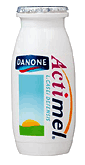

В настоящее время развернута широкая рекламная акция продуктов, содержащих живые культуры пробиотических микроорганизмов, как способных оказать положительное влияние на состояние здоровья. Так, наверное, наиболее известным из них является Актимель — молочный напиток, содержащий пробиотик Lactobacillus casei DN-114001. Одно из самых «неотложных состояний» у молодого человека в наше время — это сессия. Дважды в году миллионы юношей и девушек находятся в состоянии стресса, и, возможно, им требуется дополнительная поддержка? Способны ли пробиотики (в частности, Актимель) оказать такую помощь?

В настоящее время развернута широкая рекламная акция продуктов, содержащих живые культуры пробиотических микроорганизмов, как способных оказать положительное влияние на состояние здоровья. Так, наверное, наиболее известным из них является Актимель (Actimel, компания Danone) — молочный напиток, содержащий пробиотик Lactobacillus casei DN-114001.
Одно из самых «неотложных состояний» у молодого человека в наше время — это сессия. Дважды в году миллионы юношей и девушек находятся в состоянии стресса, и, возможно, им требуется дополнительная поддержка? Способны ли пробиотики (в частности, Актимель) оказать такую помощь?
Известно, что у студентов под влиянием экзаменационного стресса наблюдается снижение иммунного ответа. Испанские учёные провели исследование, целью которого явилась оценка влияния молочного продукта, ферментированного йогуртовой культурой в сочетании с Lactobacillus casei DN-114001 (Actimel) на иммунную систему студентов во время сессии. Для этого студенты университета были разделены на две группы. Первая (исследуемая группа, n=73) — студенты, получавшие напиток Actimel по 100 мл 2 раза в день в течение 6 недель (3 недели до сессии и 3 недели в течение экзаменационного периода), вторая (контрольная группа, n=63) — стакан обычного молока ежедневно. Показатель тревожности и иммунологические параметры определялись у каждого участника в начале и в конце исследования.
Результаты представлены в виде различий между показателями, полученными до начала и в конце исследования. Как показало данное исследование, показатель тревожности статистически значимо повысился среди всех студентов от 40,74±2,50 до 61,19±2,64. Достоверных различий между контрольной и исследуемой группами по изменению данного показателя выявлено не было (21,65±5,09 vs 19,14±3,67). Однако выраженное влияние наблюдалось на изменение абсолютного числа лимфоцитов, которое уменьшилось за 6-недельный период исследования в контрольной группе (–0,04±0,12 клеток × 103/мм3) и увеличилось в исследуемой группе студентов (0,37±0,11 клеток × 103/мм3), р<0,05. Такое же статистически достоверное влияние (р<0,05) было продемонстрировано в отношении числа CD56 лимфоцитов (NK-клеток или естественных киллерных клеток — цитотоксических лимфоцитов, распознающих и уничтожающих заражённые вирусом клетки, стареющие и опухолевые клетки, а также регулирующих другие звенья иммунного ответа путём синтеза γ-интерферона и ряда интерлейкинов): в контрольной группе число CD56 лимфоцитов статистически достоверно уменьшилось (–51,97±21,33 клеток/мм3), а в исследуемой группе выросло(17,29±17,27 клеток/мм3). Исследователи также проанализировали изменения уровня кортизола в сыворотке крови студентов — отмечалось увеличение данного показателя и в контрольной группе (4,30±0,98 мкг/дл), и в исследуемой группе (1,75±1,05 мкг/дл), но данные различия были статистически не достоверны (р=0,062).
Таким образом, по результатам проведённого исследования можно сделать заключение о том, что молоко, ферментированное йогуртовыми культурами в сочетании с Lactobacillus casei DN-114001, способно корригировать количество лимфоцитов и CD56 клеток у студентов во время сессии.
Marcos A., Warnberg J., Nova E., Gomez S., Alvarez A., Alvarez R., Mateos J.A., Cobo J.M.
The effect of milk fermented by yogurt cultures plus Lactobacillus casei DN-114001 on the immune response of subjects under academic examination stress.
Eur J Nutr. 2004 Dec;43(6):381-9. Epub 2004 Jul 14.